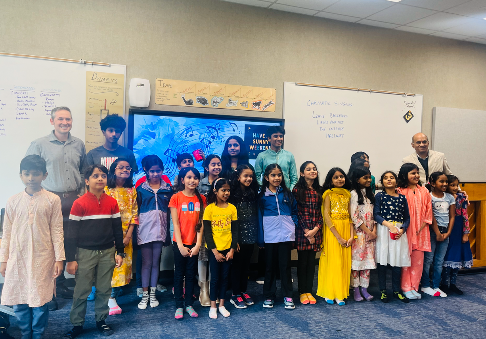
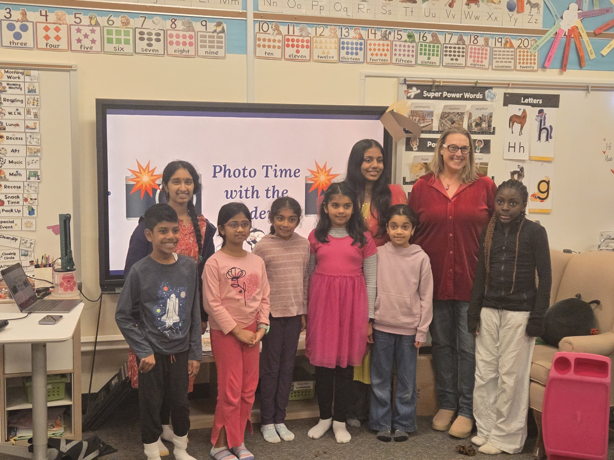
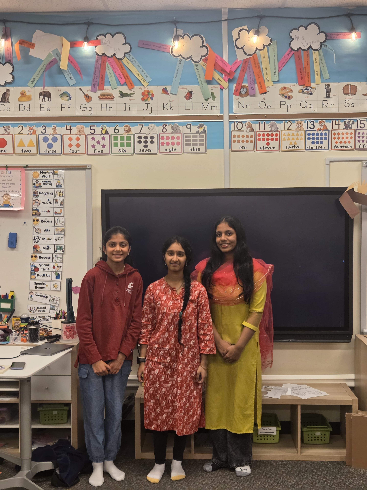
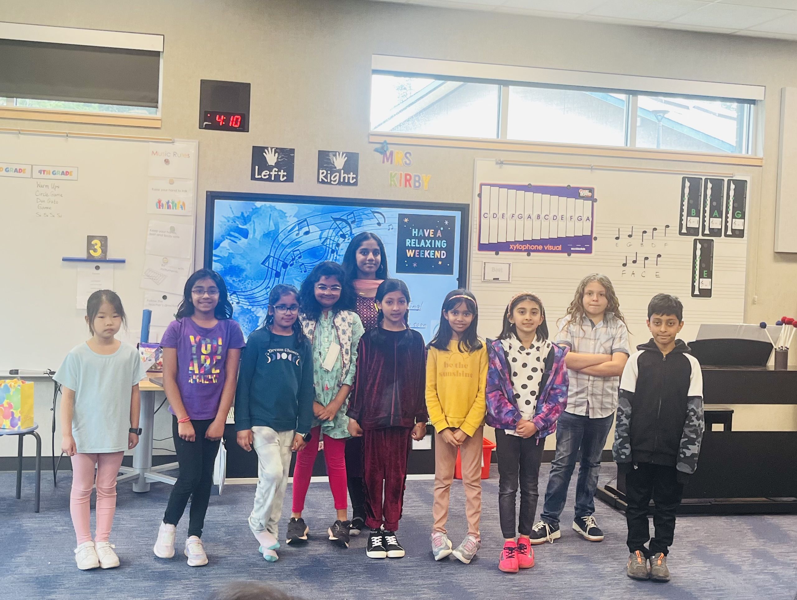
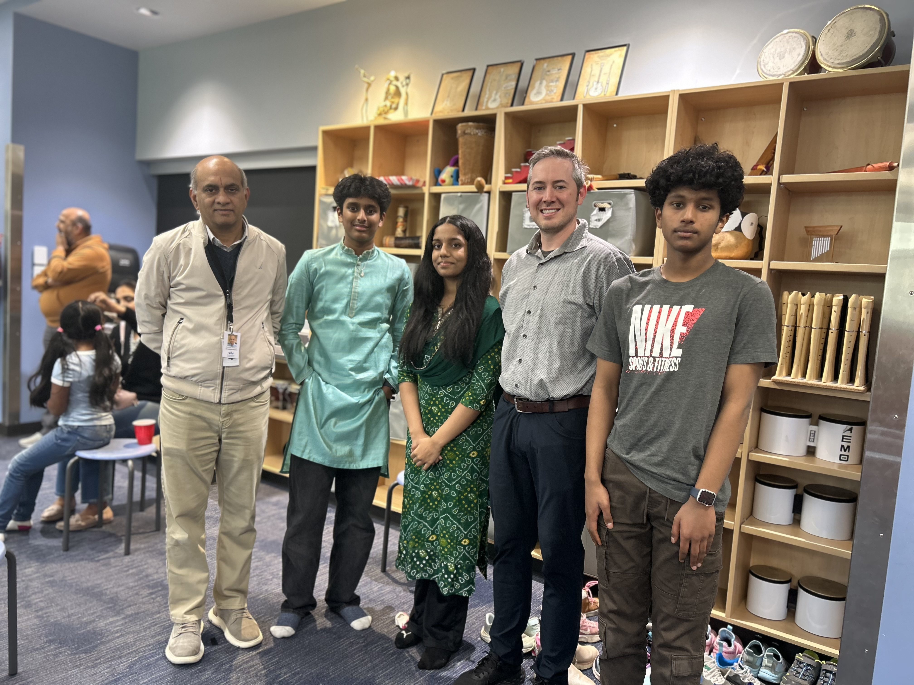
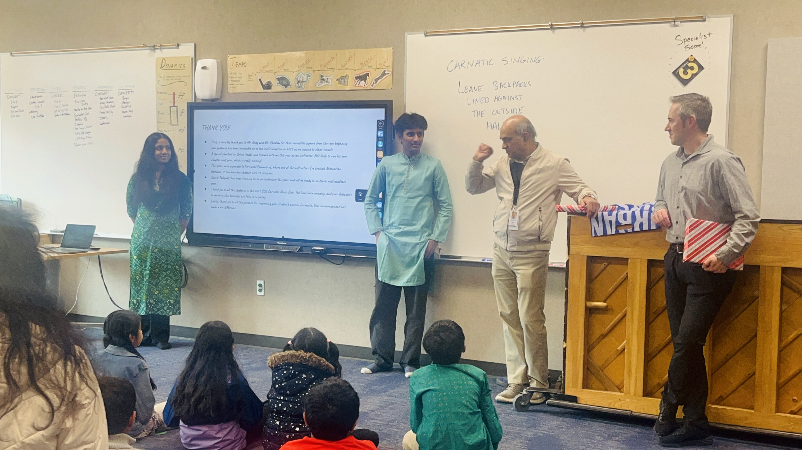
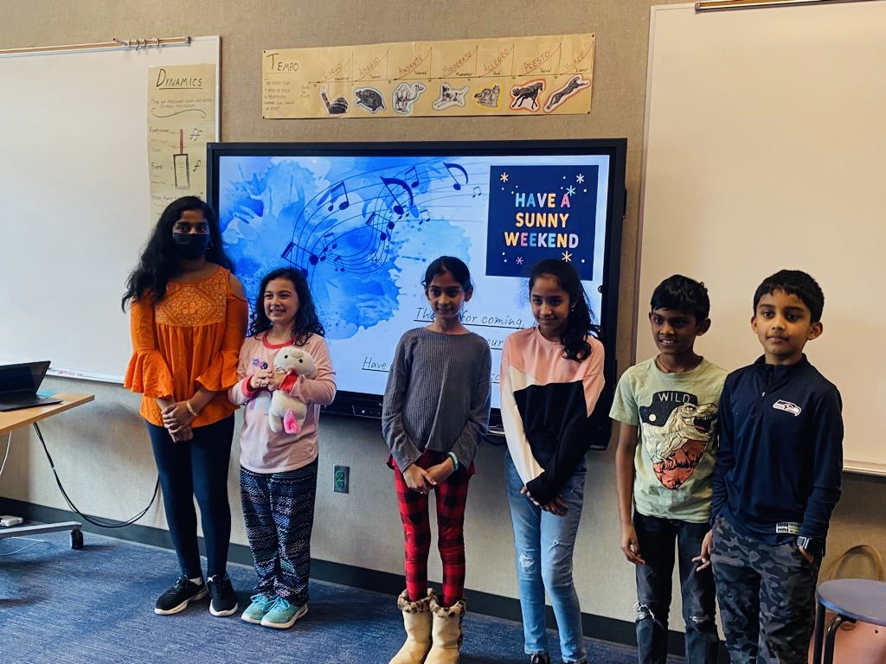

Indian classical music, reimagined for the next generation.
A student-led initiative bringing Carnatic music education to young learners across the Northshore School District through community, culture, and creativity.
90+
Students
3
Elementary schools
6
Youth instructors







